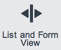

Using the Interface
| |
Note: This article applies to Fuji and earlier releases. For more current information, see User Interface Configuration at http://docs.servicenow.com
The ServiceNow Wiki is no longer being updated. Visit http://docs.servicenow.com for the latest product documentation. |
Contents
1 Overview
Users interact with the applications and information in a ServiceNow instance through the interface. Several tools and customizable features make the ServiceNow interface easy to use. With the application navigator and the Edge, users can find applications, modules, and information quickly and easily and display that information in the content frame. With the bookmark, split screen, and form pane tab features, users can customize the interface to suit their needs.
The look and feel of the user interface varies by version. The UI14 interface gives the ServiceNow product an updated look, including redesigned icons, buttons, and colors. The UI11 interface builds on the classic interface by adding the Edge. The classic interface is the original ServiceNow product interface. Functionality in these three versions is similar; where necessary, the user information includes specific descriptions for each interface.
2 Customizing the Interface
There are several ways to customize the user interface:
- Showing or hiding the application navigator and the banner frame.
- Splitting the content frame into list and form panes.
- Resizing the application navigator and the list and form panes.
- Selecting themes.
- Creating and customizing bookmarks on the Edge.
- Selecting and viewing frequently used modules in the application navigator.
To increase screen space, you can use toggle buttons to hide and show the application navigator and banner frame.
2.1.1 UI14
- Click the Toggle Navigator button (
 ) on the Edge to hide and show the navigator.
) on the Edge to hide and show the navigator. - Click the collapse and expand icons (
 /
/  ) on the right side of the banner frame to hide and show part of the banner.
) on the right side of the banner frame to hide and show part of the banner.
2.1.2 UI11
- Click the toggle navigator icon (
 ) on the Edge to hide and show the navigator.
) on the Edge to hide and show the navigator. - Click the toggle banner icon () on the Edge to hide and show the banner.
- Click the collapse and expand banner icons ( / ) on the right side of the banner frame to hide and show part of the banner.
{kind=link}
2.1.3 Classic
- Click the collapse and expand navigator icons ( / ) on the left side of the banner frame to hide and show the navigator.
- Click the collapse and expand banner icons ( / ) on the right side of the banner frame to hide and show part of the banner.
{kind=link}
{kind=link}
2.2 Splitting the Content Frame
The split screen feature is available in UI14 and UI11. The user can split the content frame to display a list pane and a form pane. There are two types of splits:
- Vertical: the left side of the content frame becomes the list pane and the right side becomes the form pane.
- Horizontal: the top of the content frame becomes the list pane and the bottom becomes the form pane.
2.2.1 UI14
- Click the gear icon (
 ) and select Split Layout Vertical or Split Layout Horizontal from the system menu.
) and select Split Layout Vertical or Split Layout Horizontal from the system menu. - Click the List and Form View button () on the Edge. The current Split Layout selection on the system menu determines the direction of the split, either vertical or horizontal. To remove the split, click the button again.
{kind=link}
2.2.2 UI11
Click either the toggle vertical split icon () or the toggle horizontal split icon () on the Edge. To remove the split, click the icon again.
{kind=link}
{kind=link}
2.3 Resizing an Element
The application navigator and the list and form panes can be resized in UI14 and UI11.
- To resize the application navigator, point to the resize control between the navigator and the content frame. When the pointer becomes a double-headed arrow, drag the window to the desired size.
- To resize the list and form panes, point to the resize control between the panes. When the pointer becomes a double-headed arrow, drag the panes to the desired size.
2.4 Selecting Themes
Themes give the user interface a specific look and feel by using different color combinations. To use themes, the administrator must activate the CSS Theme Support plugin and enable the theme picker in the banner frame by activating the ui_theme_changer UI macro.
2.4.1 UI14
This version of the user interface provides several themes with preset color combinations. To change the theme for your local session, click the gear icon ( ) in the banner frame to access the system menu and make a selection from the theme picker.
) in the banner frame to access the system menu and make a selection from the theme picker.
2.4.2 UI11 and Classic
This version of the user interface provides themes based on individual colors. To change the theme for your local session, make a selection from the theme picker in the welcome banner.
3 Using Bookmarks
A bookmark is a link to information in the ServiceNow system that is stored on the Edge. All users create and manage their own bookmarks.
Bookmarks are available in UI15, UI14, and UI11. Procedures for using bookmarks are similar between the versions of the interface and differences are noted as necessary.
3.1 Creating Bookmarks
To create a bookmark, drag a link to the Edge. You can drag any of the following links:
- Modules in the application navigator
- Breadcrumbs
- Links in lists (including lists displayed in flyouts)
- Reports
The bookmark for the link appears on the Edge. Each bookmark includes an image and a title, both of which can be customized.
- UI15 and UI14: the bookmark appears as a button with the title under the image.
- UI11: the bookmark appears as an icon.
The title also appears when you point to the bookmark and in the list of all bookmarks.
Note: You may not be able to create bookmarks with other types of links. To request this functionality for another type of link, you can log an enhancement request with the ServiceNow customer support system.
3.2 Opening Bookmarks
To open a bookmark, click the bookmark button on the Edge. By default, the bookmark opens as defined in your bookmark settings (flyout or form pane). To override your settings:
- Hold Ctrl (Windows) or Command (Mac) and click to open the bookmark in a flyout.
- Hold Shift and click to open the bookmark in a pane.
Alternatively, open a list of all bookmarks and click the bookmark name. The bookmark opens in the list or form pane, as defined in your bookmark settings.
{kind=link}
{kind=link}
3.3 Customizing Bookmarks
You can customize bookmarks in these ways using the bookmark window.
- Edit the bookmark title
- Open the bookmark in a flyout window or in the form pane
- Show the bookmark on the Edge or only in the bookmark list
- Edit the bookmark image
- (UI15 and UI14 only) Edit the bookmark color
{kind=link}
To customize a bookmark:
- Open the bookmark window.
- Enter the Title to appear as the bookmark link and flyout header.
- To open the bookmark link in a flyout window, select the Flyout check box and clear the Open in form pane check box.
- By default, the bookmark opens in the form pane. Selecting Flyout opens a window on top of the current screen without navigating away from your working panes.
- Note: Homepages that are set to refresh automatically should not be added as flyout bookmarks. These homepages refresh in the background, which can slow down performance for you and other users.
- Select the Show on edge check box to display the bookmark as a button on the Edge. Clear the check box to remove the button from the Edge; the bookmark still appears in the bookmark list.
- To change the bookmark image, click Image and then select from the list of available images.
- (UI15 and UI14 only) To change the bookmark color, select a color and then select the image.
- Click Update.
{kind=link}
To remove a bookmark from the Edge:
- Point to the bookmark. When the tip window appears, click Delete.
- Open the bookmark list and point to the bookmark. Click the Remove bookmark icon () beside the bookmark name.
{kind=link}
The application navigator appears at the left of the screen and provides links to all of the applications and modules. Use the application navigator to quickly find information and services and then display your selection in the content frame.
To view information in the application navigator:
- Click an application label to expand the application menu and show the available modules. Click again to to collapse the application menu and hide the modules.
- Collapse or expand all applications.
- UI14: Click the menu icon at the top and select Collapse All Applications or Expand All Applications.
- UI11: Click the collapse or expand all applications icons (
 /
/  ) at the top.
) at the top.
- Filter the applications and modules listed in the application navigator by entering text in the navigation filter at the top.
To view information in the content pane:
- Click a module.
- Enter <table name>.list into the navigation filter at the top to display the associated list.
For more information about using the application navigator, see Navigating Applications.
4.1 Using Favorites
Each module in the application navigator has a star icon to the left of the module name that can be selected ( ) or deselected (
) or deselected ( ). This feature is available starting with the Eureka release.
). This feature is available starting with the Eureka release.
Use the star icons to select favorite modules and then display only the favorites in the application navigator.
- Click the star icons to select and deselect modules as favorites.
- Click the filter favorites icon (
 ) next to the navigation filter to toggle between showing only the favorite modules and showing all modules.
) next to the navigation filter to toggle between showing only the favorite modules and showing all modules.
You can automatically select a module as a favorite when you click on it. To enable this setting, click the menu icon ( ) in the application navigator header and select Automatically Add Favorites. A check mark appears next to the option when it is enabled. To disable this setting, select the option again to remove the check mark.
) in the application navigator header and select Automatically Add Favorites. A check mark appears next to the option when it is enabled. To disable this setting, select the option again to remove the check mark.
5 Using the Banner Tools
The banner frame, which runs across the top of every page, contains several controls and tools. In UI14, the gear icon ( ) provides access to these tools using the system menu. In UI11 and the classic interface, these tools appear directly on the banner frame and in the application navigator header.
) provides access to these tools using the system menu. In UI11 and the classic interface, these tools appear directly on the banner frame and in the application navigator header.
- Impersonation key (
 ) (administrators only): allows the administrator to switch user views without logging out; useful for testing security and role-specific setup functions.
) (administrators only): allows the administrator to switch user views without logging out; useful for testing security and role-specific setup functions.
- Elevated Privileges (
 ) (administrators only): allows the user to elevate to a higher security role when needed and then return to their normal role.
) (administrators only): allows the user to elevate to a higher security role when needed and then return to their normal role.
- Global Text Search (
 ): searches for text in multiple applications.
): searches for text in multiple applications.
- Logout: returns to the Welcome page for subsequent login.
- Debug (
 ) (administrators only): opens the client-side JavaScript Debug window.
) (administrators only): opens the client-side JavaScript Debug window. - Change Font Size (
 /
/  ): changes the font size on all pages and menus and displays the current font size in the header.
): changes the font size on all pages and menus and displays the current font size in the header. - Split Layout: splits the content frame into two panes, either vertical or horizontal. In a vertical split, the list pane is on the left and the form pane is on the right. In a horizontal split, the list pane is on the top and the form pane is on the bottom.
- Enable Accessibility: (UI14) enables or disables the Section 508 accessibility features.
- Application (administrators only): provides a link to the Custom Applications list, the Application picker, and the create new application icon (
 ).
). - Update Set (administrators only): provides a link to the Update Sets list, the Update Set picker, and the view current update set icon (
 ).
). - Language: select a language or return to the default language (
 ). This menu option is available if a language plugin is activated.
). This menu option is available if a language plugin is activated. - Theme: select one of several themes for the user interface or return to the default theme ().
6 Switching Between UI11 and Classic
The UI11 interface includes a link that allows users to switch between UI11 and the classic interface. This link must be enabled by the administrator. If enabled, the link appears in the banner frame next to the global text search field.
- To use the classic interface, click Switch to the old UI.
- To use UI11 and enable the Edge, click Switch to the new UI.
7 Using Keyboard Shortcuts
The following keyboard shortcuts are available.
| Keyboard Shortcut | Name | UI11 Icon | UI14 Icon |
|---|---|---|---|
| Access Key + N | Toggle navigator | |
|
| Access Key + B | Toggle banner | (no equivalent) | |
| Access Key + V | Toggle vertical split |  | |
| Access Key + H | Toggle horizontal split | ||
| Access Key + M | Maximize the current pane | ||
| Hold Ctrl (Windows) or Command (Mac) and click | Open the bookmark in a flyout | ||
| Hold Shift and click | Open the bookmark in a pane |
{kind=link}
| |
Note: When using the toggle banner shortcut, make sure the page focus is in the content frame. |
| |
Note: Access keys depend on the browser and operating system you are using. For example, Google Chrome for Mac users press Ctrl+Opt+N to toggle the navigator and Firefox for Windows users press Alt+Shift+N. |